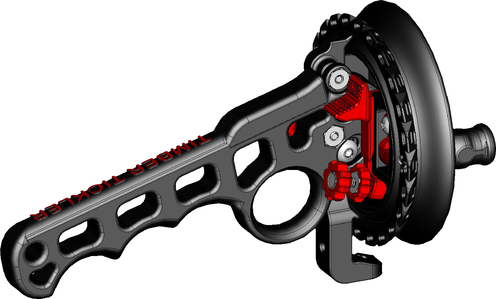

Built in the Appalachians. Designed for the Trail.
Born in Blue Ridge, Georgia and built on the idea that outdoor gear should do more, last longer, and earn its place in your pack.
FEATURED GEAR
Rocket Reel
A compact hand-line fishing reel designed for durability, simplicity, and real outdoor use. Built with ASA, TPU, and stainless steel for rugged performance in the field.
Designed to be lightweight, reliable, and easy to repair so it earns its place in your pack.

Born in the Appalachians
Ridge Runner Gear started in the mountains of Blue Ridge, Georgia — where locals say ridge runners grow up with one leg longer than the other from walking hillsides.
After retiring from a career as a mechanical design engineer, I began designing gear for my favorite kind of adventure: luxury base-camp backpacking. Too many trips with friends included the phrase “Wouldn’t it be nice if…”
That question became the foundation of Ridge Runner Gear: outdoor tools designed to do more, carry less, and last longer.
Learn More About RRG →Products
Explore multi-purpose outdoor gear designed for rugged utility, refined simplicity, and real use in the field.
View ProductsReplacement Parts
Keep your gear going with replacement parts designed to extend product life and reduce waste.
View PartsField Manuals
Download setup instructions, support materials, and field manuals for Ridge Runner Gear products.
View ManualsDesigned and built in the foothills of the Appalachian Mountains.